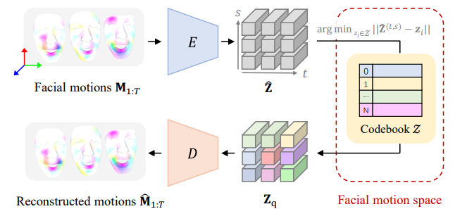
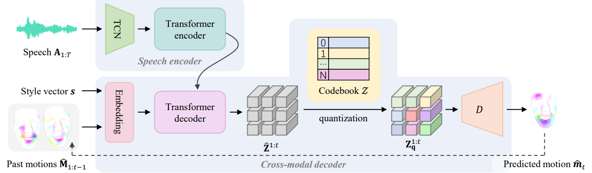

Method
Discrete Motion Prior Learning
CodeTalker first learns a discrete context-rich facial motion codebook by self-reconstruction learning over real facial motions.


Speech-Driven Motion Synthesis
It then autoregressively synthesize facial motions through code query conditioned on both the speech signals and past motions.

Comparison
Visual comparisons of sampled facial motions animated by different methods on VOCA (left) and BIWI (right) dataset. The upper partition shows the facial animation conditioned on different speech parts, while the lower depicts the temporal statistics (mean and standard deviation) of adjacent-frame motion variations within a sequence.
BibTeX
@article{park2021nerfies,
author = {Park, Keunhong and Sinha, Utkarsh and Barron, Jonathan T. and Bouaziz, Sofien and Goldman, Dan B and Seitz, Steven M. and Martin-Brualla, Ricardo},
title = {Nerfies: Deformable Neural Radiance Fields},
journal = {ICCV},
year = {2021},
}